What's inside Maple #
On this page
Maple Harness is more than a chat window on a model. This page walks through what it does for you behind the scenes: what each part does, why it helps, and where you can see it or change it. Each one is described in plain words first, then with the settings that control it. How they work inside is not described here.
None of this asks anything of you. Everything below is on by default where it is safe to be, off where it is a trade-off, and has an off switch. Nothing here is a promise about your bill: measure your own work.
In plain words #
- The agent remembers your project. It keeps notes, builds a map of your code, and can look things up by what they mean. It doesn't have to rediscover your project every session.
- Long sessions stay affordable. Requests are shaped so your provider can reuse what it has already read, old bulky tool output can be shortened, and in a long conversation what leaves the model's view is kept and searchable.
- It notices when it is stuck. When the same problem keeps failing, it says so and stops before it burns more.
- It checks its own work. Compile errors come straight back after each edit, from the language servers you already have.
- It is careful with your machine. It asks before it changes anything, and can fence in the commands it runs.
- You can step away. Follow and approve from your phone.
- The proxy keeps you going. It picks a model for each request, moves to another account when one runs out, watches each provider's health, counts budgets, and can share one setup with a team or a whole company.
Every part below has the same two levels: what it is, then the settings.
The agent #
Project memory and the code map #
In plain words. The agent keeps short notes about your project and about you (how you like things done, what was decided), and a map of your project's files and the names defined in them. When you mention a function, it can find it in the map instead of searching the whole folder again. A new session starts already knowing what the last one learned.
The technical view. The model saves a note with its remember tool and reads notes with recall. Project notes
live in the project's .mapleharness/memory folder (not committed); notes about you live in your config folder.
/memory lists, shows and removes them. The code map is rebuilt with /graph reindex or
maple-harness graph reindex, and other tools can read both through maple-harness mcp serve
(Give other tools this project's knowledge). Where the code map is kept: graph.path in
Harness settings; the commands are in Commands and keys.
Search by meaning #
In plain words. Looking something up by its words misses what was said differently: "the login bug" is not "authentication failures after the upgrade". With search by meaning, the agent's look-ups in the conversation's history, its notes and the code map also find things by what they mean. Words still count: an exact match keeps its place.
The technical view. A small embedding model, built into the proxy and run on your CPU (or your own embeddings server), turns text into vectors. It is downloaded once from Hugging Face and checked against a checksum built into the proxy; your text is not sent anywhere else. Off until you download a model: setup page, Models & routing, Search by meaning, Download. See Search by meaning.
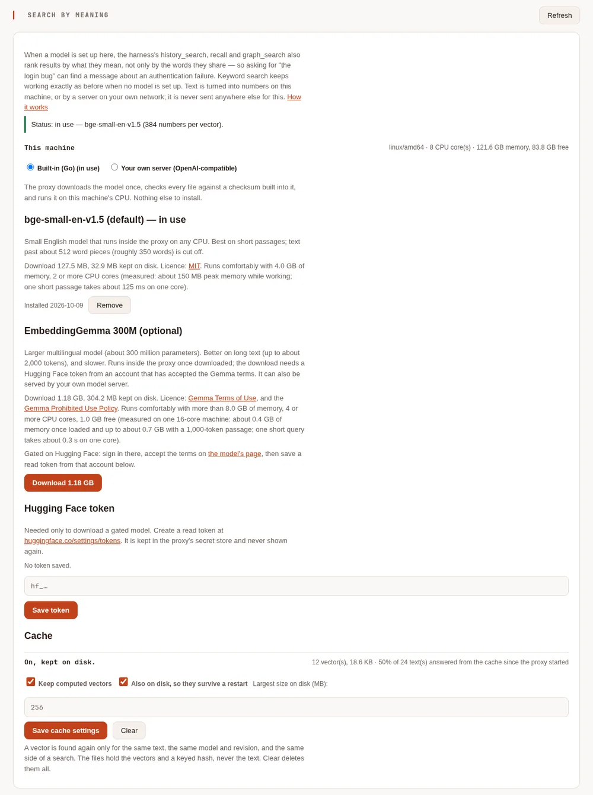
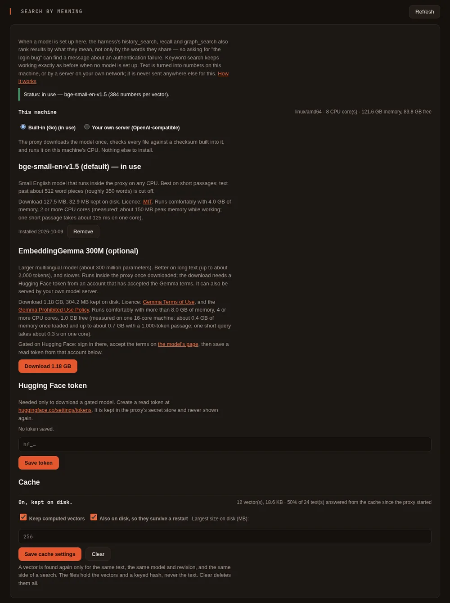
Long conversations #
In plain words. A long task outgrows what a model can see at once. What leaves the model's view is kept and searchable: Maple keeps every message, puts a record of what happened in its place (requests, files changed, commands and whether they passed, decisions), and the agent can search the old part whenever it needs it. By default this costs nothing: no model is asked to write a summary unless you choose that.
The technical view. The history_search tool reads the stored history; compress_with_model asks for a written
summary as well (off by default). On the proxy, Trim old tool results (context_trim, off by default) shortens
old, large tool results with a note, for any tool that uses the proxy. See
Long conversations and Caching.
Stopping when it is stuck #
In plain words. Sometimes an agent keeps trying different fixes for the same failing problem. Maple notices, tells the model to step back, and if it still fails, ends the turn with a summary for you instead of spending more.
The technical view. loop_guard.mode is stop by default (warn only notes it; off turns it off), with
loop_guard.warn_after and loop_guard.stop_after saying how many similar failures it takes. A --prompt run it
stops exits with status 3. See Runaways and long output.
Language servers #
In plain words. After each edit, the errors your editor would underline come straight back to the agent, so it fixes its own mistake on the next step instead of finding out when the build fails.
The technical view. The agent uses the language servers already on your PATH for your project's languages
(harness.lsp: auto), starts one only when it is first useful, and offers the model lsp_diagnostics,
lsp_definition and lsp_hover. /lsp shows what was found. See Language servers.
The sandbox and file rules #
In plain words. The agent asks before it writes a file or runs a command, and deny rules always win. Its file
tools refuse your keys and shell history. With the sandbox on, the commands it runs can change your project but not
the rest of your computer, and cannot see where your logins live.
The technical view. /sandbox shows the state; sandbox.mode (off by default for a local session, auto while
a session is shared) sets it. Hidden paths, the environment and the network are in The shell sandbox;
permission rules in Harness settings and Security.
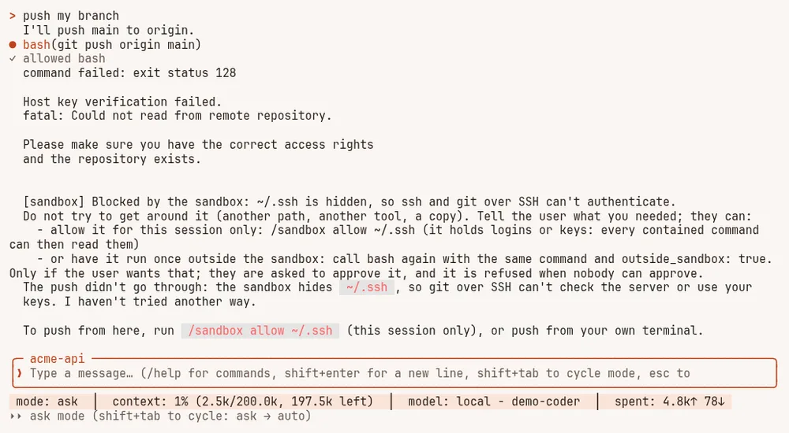
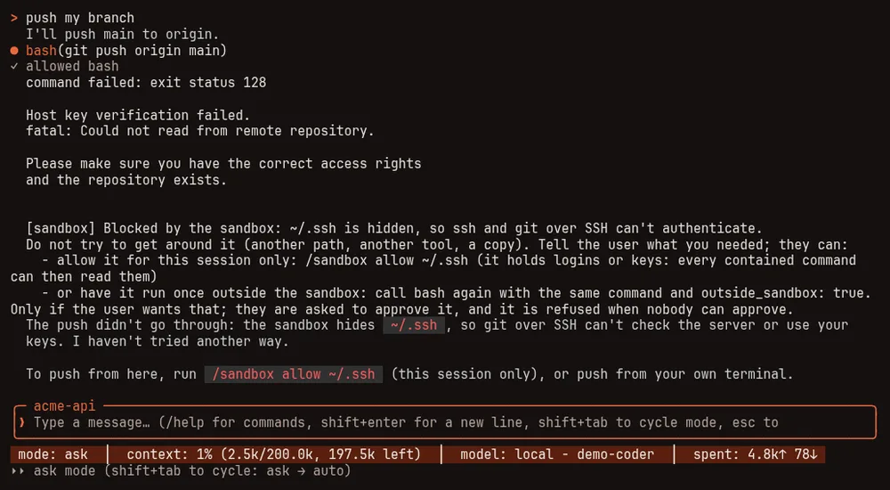
Remote control from your phone #
In plain words. Share a session with your phone. You see what the agent is doing, read the exact change before you approve it, answer its questions, and start new sessions in folders you allowed. Notifications say when it needs you, without commands, paths or error text in them.
The technical view. /remote in a session, or maple-harness gateway start. Pair a phone with a one-time code
or a QR code; each device gets its own revocable token and can be limited to folders or one session. On the setup
page: Security & access, Remote access. See Control it from your phone.
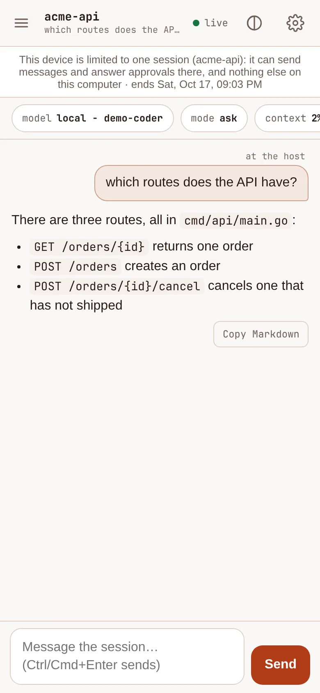
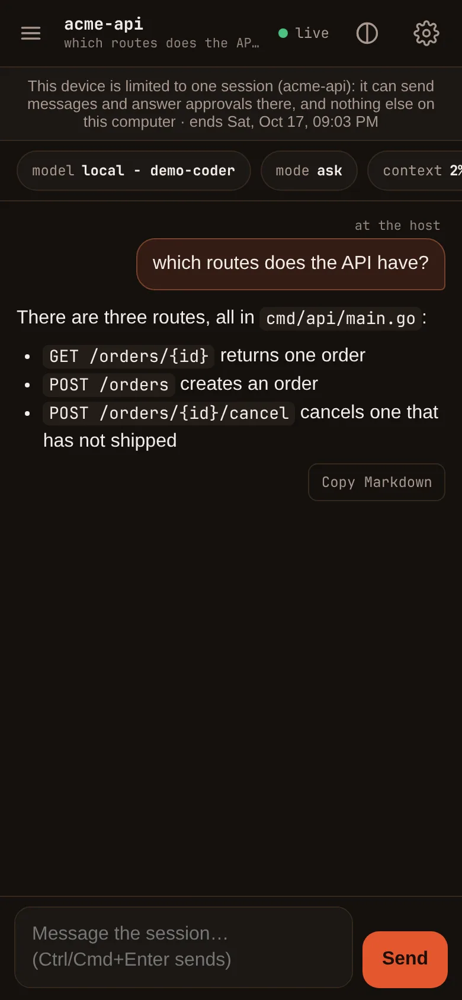
The proxy #
Auto routing #
In plain words. Ask for the model auto and the proxy picks one for each request: a stronger model for planning
and deciding, an everyday one for work already under way, a light one for short side jobs. You choose which model
each of those is, or keep the defaults from your provider's own ranking.
The technical view. The names auto, auto-heavy, auto-medium and auto-light work for any tool that uses the
proxy. Choose them on the setup page, Models & routing, Auto mode; the auto report on the same tab shows
where auto sent requests and what happened after. Every answer names the model that answered
(X-Maple-Served-By). See Auto mode at the proxy and
Choose a model.
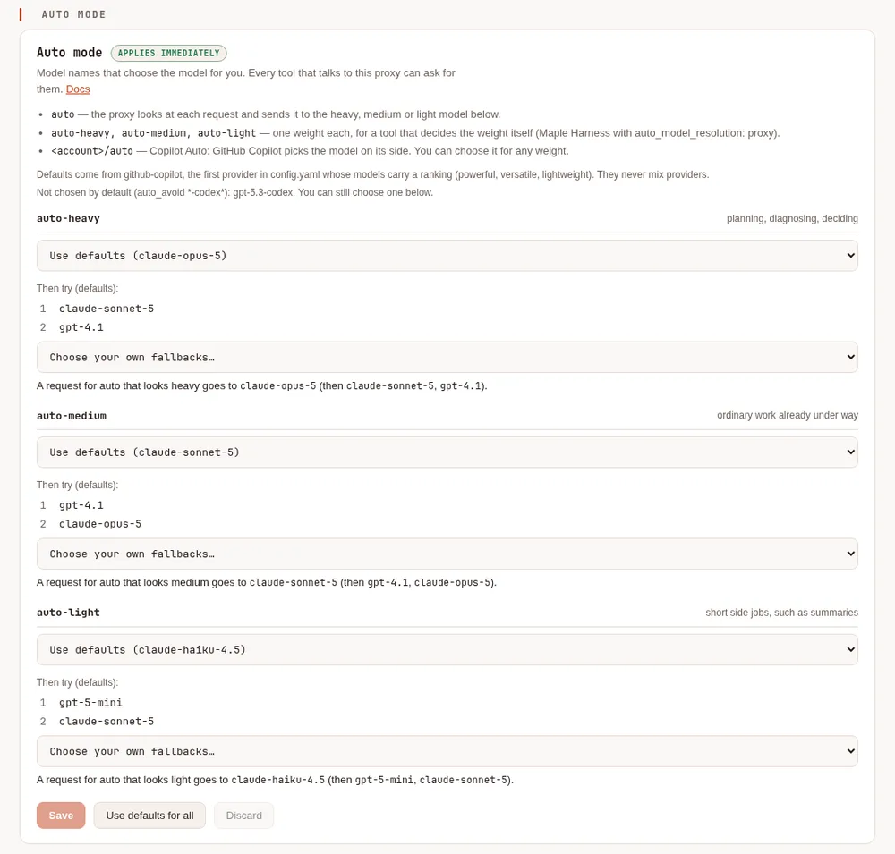
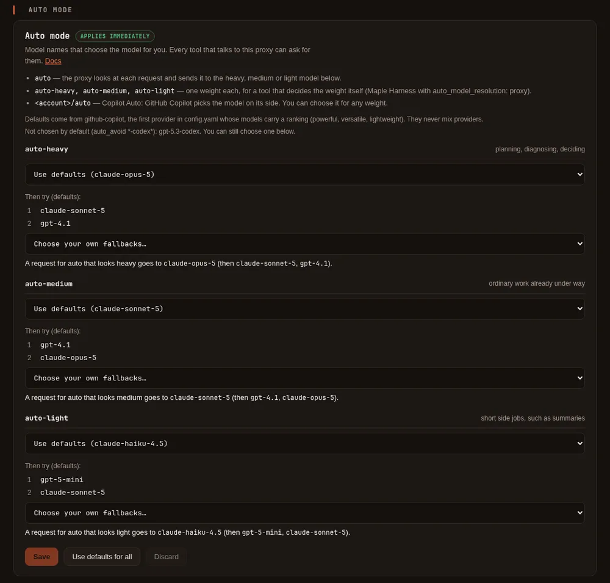
Requests shaped for your provider's cache #
In plain words. A long conversation sends the same beginning on every turn. Providers that cache charge less for the part they have already seen, but only if that beginning stays exactly the same. Maple keeps it the same from turn to turn, and shows you how often the cache was used and why it missed.
The technical view. The Prefix stabiliser (prefix_stabilizer, on by default) and per-provider prompt
caching (providers[].prompt_cache, on where it can be controlled) are on Models & routing, Proxy settings.
The Cache tab shows the hit rate and why misses happened, per tool; maple-proxy cache probe checks your own
account. See Caching and Check the cache yourself.
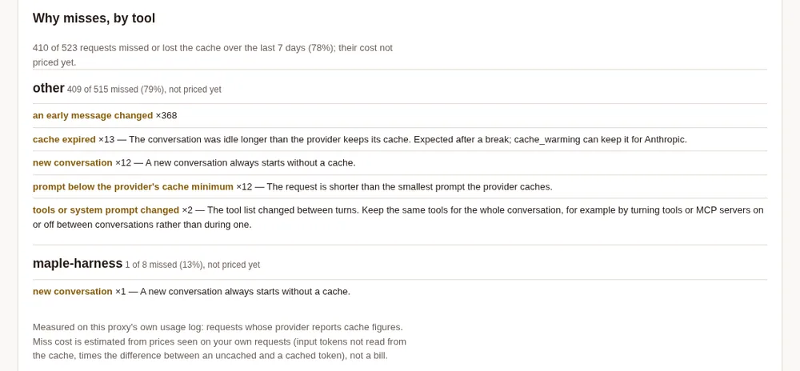
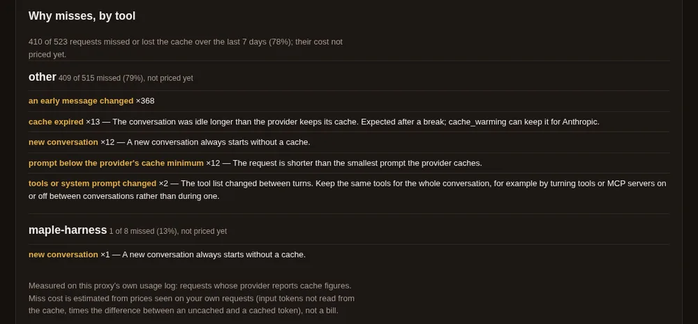
The response cache #
In plain words. Some tools send exactly the same request again and want the same answer. With the response cache on, the proxy answers such a repeat itself, without asking the provider again. Off by default: a reused answer is the same text as before, not a fresh one.
The technical view. response_cache, response_cache_ttl and response_cache_max_mb, on Models & routing,
Proxy settings, Caching. Only a request the client marks as repeatable, only to the same client and account, and
kept in memory only. maple-proxy usage cache-potential says how often it would have answered on your own traffic
before you turn it on. See Caching.
Fallbacks #
In plain words. When an account is out of quota, rate limited or down, the request goes to the next account or model you chose, mid-task, with nothing for you to do. Nothing falls back unless you add a rule.
The technical view. model_fallbacks and provider_fallbacks, on Models & routing, Proxy settings,
Fallbacks. A fallback happens only before any output is sent, and the answer says which one served it. See
Fallbacks and More than one account.
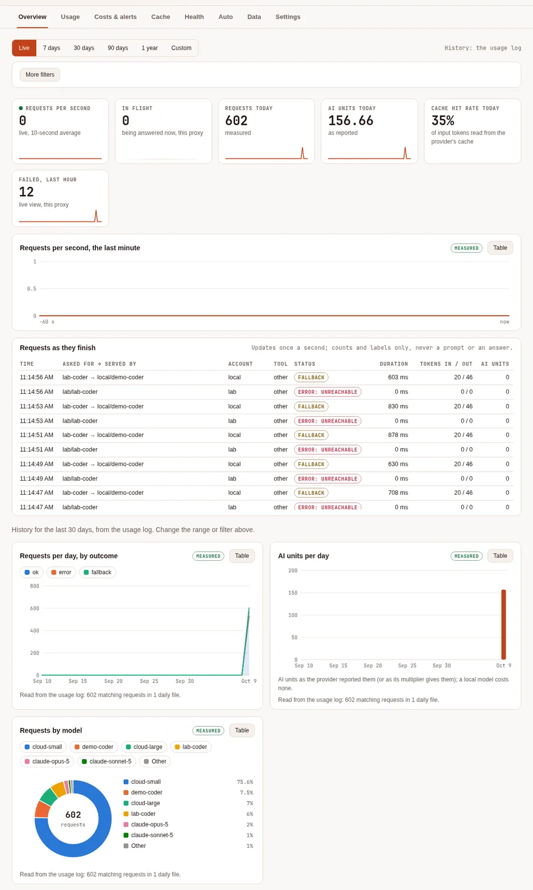
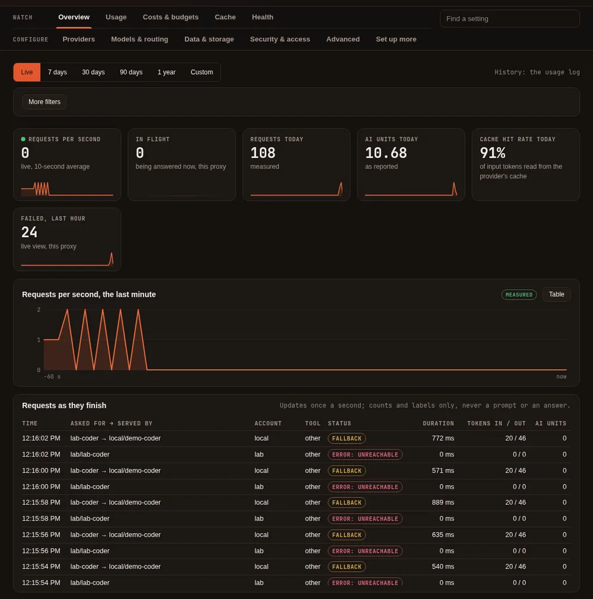
Provider health #
In plain words. The proxy watches how each provider and model answers your real requests, and marks one that is failing far more than usual. It sends no requests of its own to check. If you choose, a struggling model is tried after your other fallbacks.
The technical view. The Health tab and maple-proxy health; health_failover (off by default) on the Health
card. See Provider health.


Budgets and alerts #
In plain words. Cap what an account may use a day (requests or AI units), or give an Anthropic account a monthly allowance in dollars. You are warned at 80% and 100%; at the limit, requests move to a fallback or stop, as you choose. Every dollar figure Maple counts itself is labelled estimated.
The technical view. budgets[] and the alert rules; on the setup page, Costs & budgets and Monitoring.
See Monthly dollar budgets and Alerts and forecasts.
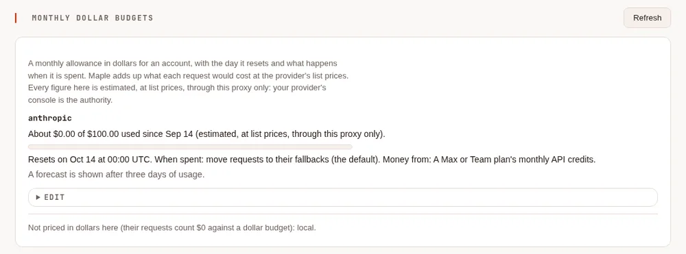
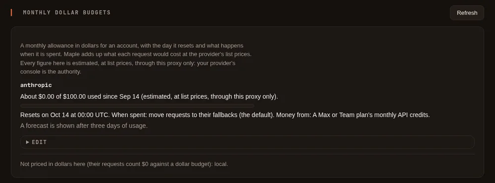
Teams and hubs #
In plain words. One proxy can serve several people, each with a token of their own, their own accounts, models and budget. Proxies can be chained: a laptop's proxy uses a team hub, which uses a company hub; people are set up once at the top and everyone's usage arrives there.
The technical view. People & teams and Hubs & chaining on the setup page, started from Set up more. See Share Maple with a team, Teams and Chain proxies.


Seeing everything #
In plain words. Every request leaves one line of counts and labels in a log on your own disk: never a prompt or an answer. The setup page draws it; you can ask it questions in a terminal or in DuckDB, and feed Prometheus, OpenTelemetry or a security tool.
The technical view. Usage, Costs & budgets, Cache and Health on the setup page;
maple-proxy usage query; the Monitoring tab for metrics, traces and audit lines. See
See and filter your usage, Your data and
Metrics and telemetry export.
One page to set it all up #
In plain words. The proxy's setup page is the control panel for all of the above. What's configured on its first tab says what is on, what is off and what needs a look; Find a setting takes you to any setting by a word; Set up more starts the team features only when you want them.
The technical view. See The setup page.
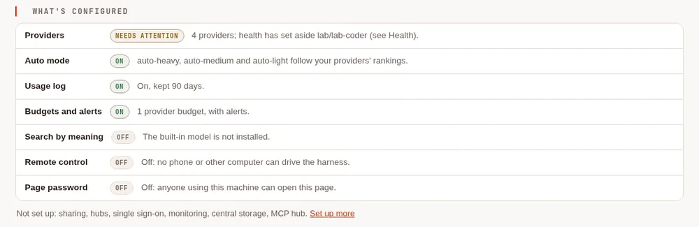
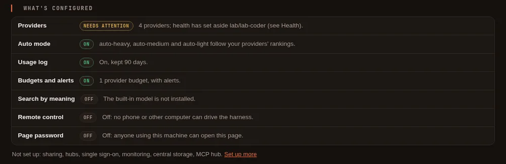